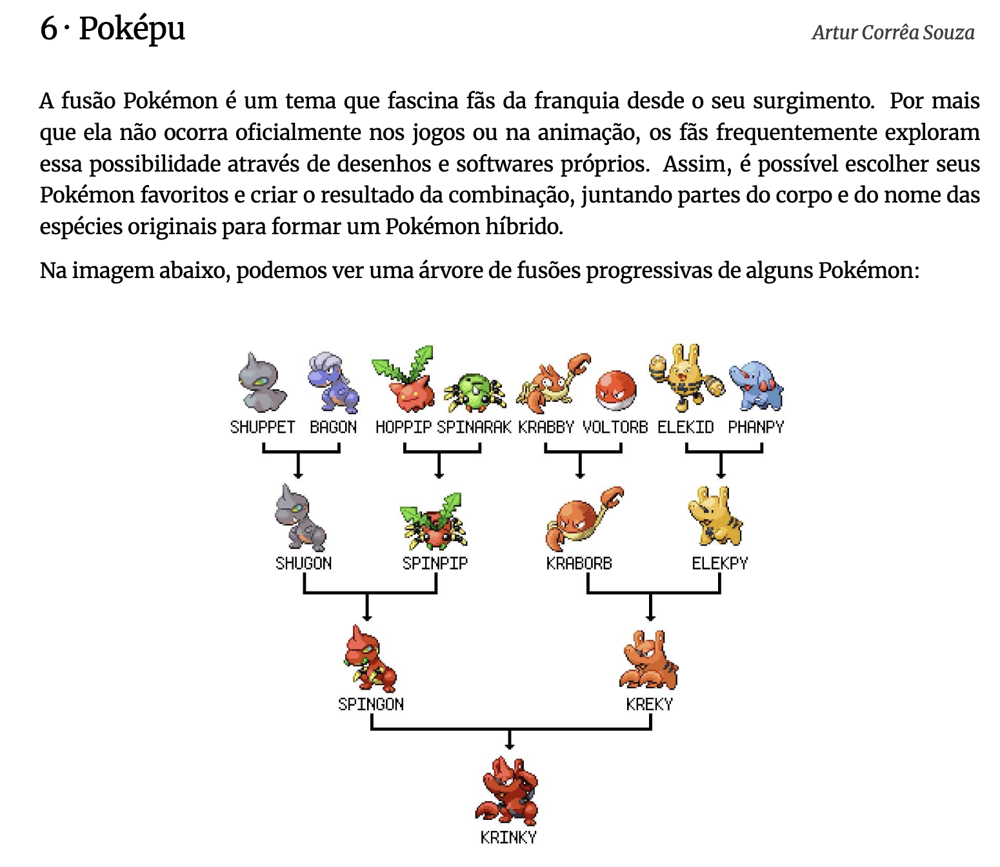

5 Por que a ciência precisa de afirmações que possam ser verdadeiras ou falsas?
Roteiro de aula elaborado com o apoio de linguagens de programação e ferramentas de inteligência artificial, submetido à revisão, validação e curadoria pedagógica do professor.
Leitura indicada
Pensamento crítico (p. 3-9), capítulo do livro Pensamento crítico: o poder da lógica e da argumentação, de Walter Carnielli e Richard Epstein. Disponível na Biblioteca Virtual.
5.1 Objetivos de aprendizagem
Ao final deste encontro, e com base na leitura indicada, espera-se que você seja capaz de:
- distinguir diferentes tipos de frase;
- identificar asserções entre diferentes tipos de frase;
- explicar o que significa uma asserção possuir valor de verdade;
- distinguir a presença do valor de verdade da possibilidade de o determiná-lo.
5.2 Aprendizagem prática
Produção
Você e uma amiga (ou amigo) criaram um aplicativo que conecta passageiros a pessoas que realizam viagens utilizando o próprio carro.
Agora vocês precisam atrair motoristas para a plataforma do aplicativo.
Criem um anúncio curto e persuasivo para as redes sociais. O anúncio deve conter:
- um título ou slogan;
- um texto de duas a quatro frases;
- uma chamada para o cadastro.
Objetivo: convencer pessoas de que vale a pena trabalhar por meio do aplicativo.
5.3 Contextualização
Na atividade anterior, usamos a língua com um objetivo específico: persuadir pessoas a aderir a um aplicativo. As escolhas feitas no anúncio — as palavras, as informações destacadas e a maneira de apresentá-las — estão relacionadas a esse contexto de uso.
Usamos a língua de maneiras diferentes conforme o que fazemos com ela: podemos persuadir, perguntar, dar instruções, expressar reações ou fazer afirmações sobre o mundo. Essas diferenças tornam-se especialmente importantes quando entramos no contexto científico.
Considere, por exemplo:
A inteligência artificial substituirá todos os professores.
Podemos não saber se isso acontecerá. Ainda assim, a frase afirma algo que pode ser verdadeiro ou falso.
Compare:
A inteligência artificial substituirá todos os professores?
Agora, não temos uma afirmação, mas uma pergunta.
Essa diferença aparentemente simples é fundamental para o pensamento crítico: antes de avaliar se aquilo que alguém diz é verdadeiro, falso ou bem fundamentado, precisamos identificar que tipo de frase está sendo apresentada e se ela afirma algo que admite ser verdadeiro ou falso.
5.4 Leitura em foco
Asserção (ou afirmação): Uma asserção é uma frase declarativa que pode ser encarada como verdadeira ou falsa (…). (Carnielli; Epstein, 2023, p. 4, destaque dos autores)
Uma asserção afirma que algo é de determinada maneira. Por isso, aquilo que ela afirma pode ser verdadeiro ou falso: dizemos, então, que a asserção possui valor de verdade.
Compare:
A Terra gira em torno do Sol.
É uma asserção. Podemos determinar que ela é verdadeira.
A Terra possui dois satélites naturais.
Também é uma asserção. Podemos determinar que ela é falsa.
Existe vida inteligente fora da Terra.
Também é uma asserção. Entretanto, atualmente não temos condições de determinar se ela é verdadeira ou falsa.
Isso permite estabelecer uma distinção importante:
Ter valor de verdade não é o mesmo que conseguir determinar o valor de verdade.
Toda asserção admite ser verdadeira ou falsa. Entretanto, nem sempre temos informações, evidências ou conhecimentos suficientes para determinar qual é o seu valor de verdade.
Perguntas, ordens e outras frases que não apresentam algo como verdadeiro ou falso não são asserções e, portanto, não possuem valor de verdade.
5.5 Aprendizagem prática
Análise
Analise cada frase do carrossel conforme a tabela abaixo:
| O que analisar | Possibilidades |
|---|---|
| Identifique o tipo de frase | Declarativa; interrogativa; imperativa; exclamativa. |
| Verifique se é uma asserção | É asserção: possui valor de verdade e, portanto, pode ser encarada como verdadeira ou falsa. Não é asserção: não possui valor de verdade. |
| Podemos determinar seu valor de verdade? | Sim: é verdadeira; sim: é falsa; não é possível determinar atualmente se é verdadeira ou falsa. |
5.6 Aprendizagem prática
Análise
Até aqui, analisamos frases isoladamente. Agora, vamos observar como diferentes tipos de frase aparecem em um texto.
Leia o fragmento.
Adriana entrou no laboratório e percebeu que todos os computadores estavam desligados. “O que aconteceu aqui?”, perguntou ao colega que estava junto à porta. Marina apontou para o quadro de energia e respondeu: “Houve uma queda de energia durante a madrugada.” De repente, uma das máquinas ligou sozinha. “Que estranho!”, exclamou Adriana. Marina aproximou-se do computador e disse: “Não toque em nada antes de verificarmos o sistema.” As duas permaneceram diante da máquina tentando entender o que havia acontecido.1
Analise as frases retiradas do fragmento e, para cada uma, identifique:
- o tipo de frase;
- se é ou não uma asserção;
- se possui ou não valor de verdade.
1. O que aconteceu aqui?
2. Houve uma queda de energia durante a madrugada.
3. Que estranho!
4. Não toque em nada antes de verificarmos o sistema.
…
1. “O que aconteceu aqui?”
- Tipo de frase: interrogativa.
- Não é asserção.
- Não possui valor de verdade.
2. “Houve uma queda de energia durante a madrugada.”
- Tipo de frase: declarativa.
- É asserção.
- Possui valor de verdade.
3. “Que estranho!”
- Tipo de frase: exclamativa.
- Não é asserção.
- Não possui valor de verdade.
4. “Não toque em nada antes de verificarmos o sistema.”
- Tipo de frase: imperativa.
- Não é asserção.
- Não possui valor de verdade.
Agora observe o fragmento como um todo:
Que tipo de frase aparece com maior frequência na narração feita pelo narrador? E que tipos aparecem nas falas das personagens?
…
Na narração, predominam as frases declarativas, pois o narrador apresenta acontecimentos e situações.
Nas falas das personagens, encontramos maior variedade: frases interrogativas, declarativas, exclamativas e imperativas.
Isso mostra que diferentes tipos de frase podem coexistir em um mesmo texto e desempenhar funções distintas.
No fragmento narrativo, encontramos diferentes tipos de frase.
E em um texto científico? Que tipo de frase você espera encontrar com maior frequência?
5.7 Aprendizagem prática
Análise
Leia atentamente o texto.
Este estudo investigou a relação entre o uso de ferramentas de inteligência artificial generativa e o desempenho acadêmico de estudantes universitários em atividades de programação. Participaram da pesquisa 84 estudantes matriculados em uma disciplina introdutória de Ciência da Computação, distribuídos em dois grupos. Durante oito semanas, 42 participantes utilizaram uma ferramenta de inteligência artificial como apoio à resolução de exercícios, enquanto os demais realizaram as mesmas atividades sem acesso à ferramenta. O desempenho dos estudantes foi avaliado por meio de testes aplicados antes e depois do período de intervenção. Os resultados mostraram aumento médio de 18% no desempenho do grupo que utilizou a ferramenta e de 11% no grupo que realizou as atividades sem seu uso. Os estudantes do primeiro grupo também relataram maior facilidade para identificar erros nos códigos produzidos durante as atividades. Os resultados sugerem que o uso orientado de ferramentas de inteligência artificial pode contribuir para a aprendizagem de programação em disciplinas introdutórias.2
- Quantas frases compõem o fragmento? Qual é o tipo de frase predominante?
…
O fragmento é constituído por sete frases.
Todas são frases declarativas. Portanto, esse é o tipo de frase predominante no fragmento.
- Analise as frases do fragmento e responda: são asserções? Justifique sua resposta com base no conceito de valor de verdade.
…
Sim. As sete frases são declarativas e apresentam algo que pode ser verdadeiro ou falso. Portanto, são asserções e possuem valor de verdade.
Isso não significa, entretanto, que possamos determinar se cada uma delas é verdadeira ou falsa apenas pela leitura do fragmento.
- Reconhecer que uma frase possui valor de verdade não significa saber se ela é verdadeira ou falsa. Analise as duas asserções abaixo.
Asserção 1
Os resultados mostraram aumento médio de 18% no desempenho do grupo que utilizou a ferramenta e de 11% no grupo que realizou as atividades sem seu uso.
Asserção 2
Os resultados sugerem que o uso orientado de ferramentas de inteligência artificial pode contribuir para a aprendizagem de programação em disciplinas introdutórias.
Para cada uma, responda:
- É possível determinar, apenas com as informações apresentadas no fragmento, se ela é verdadeira ou falsa?
- Que evidências seriam necessárias para verificar o que está sendo afirmado?
…
Asserção 1
Não é possível determinar, apenas pela leitura do fragmento, se a asserção é verdadeira ou falsa.
Em uma pesquisa real, seria necessário examinar os dados coletados, os resultados dos testes e os procedimentos utilizados para calcular os percentuais. Essas evidências permitiriam verificar se os resultados apresentados correspondem aos dados obtidos.
Asserção 2
Também não é possível determinar, apenas pela leitura do fragmento, se a asserção é verdadeira ou falsa.
Nesse caso, seria necessário examinar não apenas os resultados, mas também aspectos como os procedimentos da pesquisa, o modo de formação dos grupos, os instrumentos utilizados para avaliar a aprendizagem e outras possíveis explicações para a diferença de desempenho observada.
Há uma diferença importante entre as duas asserções: a primeira apresenta um resultado da pesquisa; a segunda apresenta uma interpretação dos resultados.
O que esta análise nos mostra?
Em textos científicos, predominam asserções porque a ciência apresenta afirmações sobre os fenômenos investigados, os procedimentos realizados, os resultados obtidos e suas interpretações.
Uma asserção não é necessariamente verdadeira. Ela possui valor de verdade porque pode ser verdadeira ou falsa, mesmo quando não dispomos de informações suficientes para determinar qual é esse valor.
O pensamento científico não se limita a formular asserções: é preciso confrontá-las com evidências que permitam sustentá-las ou questioná-las.
5.8 Sistematização
Uma frase pode desempenhar diferentes funções: declarar, perguntar, ordenar ou expressar uma reação.
Uma asserção é uma frase declarativa que apresenta algo que pode ser verdadeiro ou falso. Por isso, as asserções possuem valor de verdade.
Há uma distinção fundamental:
ter valor de verdade ≠ conseguir determinar o valor de verdade
Uma asserção pode ser verdadeira ou falsa mesmo quando ainda não dispomos de informações suficientes para determinar qual é o seu valor de verdade.
Por que a ciência precisa de afirmações que possam ser verdadeiras ou falsas?
Porque o conhecimento científico depende de afirmações que possam ser confrontadas com evidências. Se uma afirmação admite ser verdadeira ou falsa, podemos investigar aquilo que ela afirma e buscar evidências que permitam sustentá-la ou questioná-la.
5.9 Aprendizagem prática
Desafio
Vamos aplicar o pensamento científico?
Para resolver o desafio, observe os dados, formule uma hipótese sobre o padrão e teste-a nas alternativas.

Na árvore acima, os nomes dos personagens híbridos são formados a partir de um padrão geral, com exceção de apenas dois. Se os nomes de todos os Pokémon fossem formados seguindo o padrão geral, qual não poderia ser um nome possível para o último Pokémon da árvore (o mais de baixo)?
- krabgon
- elekgon
- spinpy
- spinky
- spinorb
…
Resposta correta: d) spinky
O padrão geral consiste em formar o nome de cada personagem híbrido combinando o início do nome de um Pokémon com o final do nome de outro.
Seguindo esse padrão, seriam possíveis:
- spinpy
- krabgon
- spinorb
- elekgon
A única alternativa que não poderia ser formada seguindo o padrão geral é spinky, pois sua formação depende de kreky, um dos nomes que fogem ao padrão.
Para a próxima aula:
Vamos compreender como asserções podem ser relacionadas para formar argumentos. Vamos estudar os conceitos de premissa, conclusão e inferência.